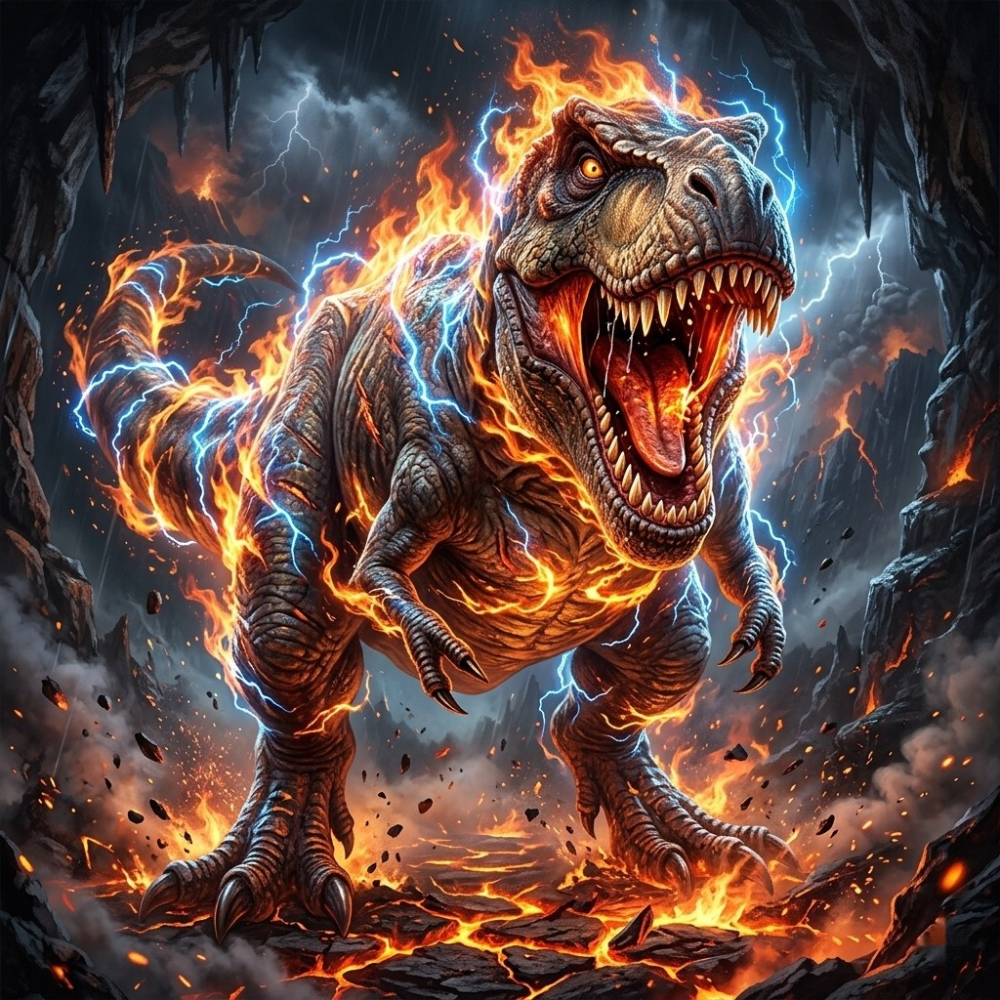

개발 계획도
G7BB 진화 탐구 시리즈 — 기본툴 1개 → 5가지 버전 × 2가지 형식
곤충배틀 기본툴을 바탕으로 주제를 바꿔 5가지 버전을 만들고, 각 버전에서 재미 형식과 교육 형식 중 선택해서 시작합니다.
1기본툴


🐞 곤충배틀 완성 · 대전 곤충박람회 운영
아이가 그린 그림 + 몸 부위·출신지·성장단계 선택 → AI가 멋진 곤충 그림으로 변환 → 환경별 생존 배틀과 랭킹. 이 틀을 그대로 두고 주제(생물·부위·환경)만 바꿔서 확장합니다.
✏️ 그리기▶
🧬 부위·환경 고르기▶
🤖 AI 그림▶
⚔️ 배틀
▼ 같은 틀로 주제만 바꿔 개발 (순서대로)
1-1 ~ 1-55가지 추가 버전
1-1

🦖 공룡
몸집·이빨·꼬리 고르기
살던 시대·환경 고르기
1-2
🦁🐘
예시 그림 준비 중🐾 동물
몸 부위 고르기
사는 곳(서식지) 고르기
1-3

🐟 어류
지느러미·몸 모양 고르기
물의 깊이·온도 고르기
1-4

🌿 식물
잎·뿌리 고르기
햇빛·물·흙 조건 고르기
1-5
👽🛸
예시 그림 준비 중👽 외계인
외계인 + 우주선 + 우주무기
별·행성 환경 고르기
▼ 모든 버전에서 형식을 선택
2형식 선택
🎮 재미📚 교육
2-1🎮 재미 형식 · 기존 곤충배틀
재미를 극대화하고, 배틀을 통해 순위를 정해요
✏️ 그리기▶
🧬 능력▶
🤖 AI 그림▶
⚔️ 배틀▶
🏆 순위
- 필살기 · 타이밍 게임 · 레벨업 · 뱃지로 재미를 극대화해요
- 친구·랭커와 붙은 배틀 결과로 순위가 정해져요
2-2📚 교육 형식 · 환경과 진화를 배워요
배틀은 학습의 한 부분일 뿐이에요
✏️ 그리기▶
🌍 환경 선택▶
🧬 세대 진화·퇴화▶
⚔️ 생존 싸움▶
🌟 오래 살아남은 개체
- 선택한 환경에 따라 더 진화하거나 퇴화하는 부분을 직접 정해요 (안 정해도 환경에 맞춰 자동으로 진행돼요)
- 그 환경에서 오래 살아남은 · 잘 적응한 생물을 보여줘요